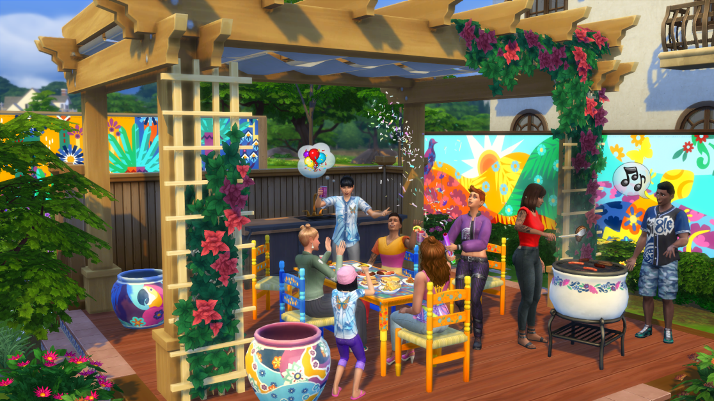
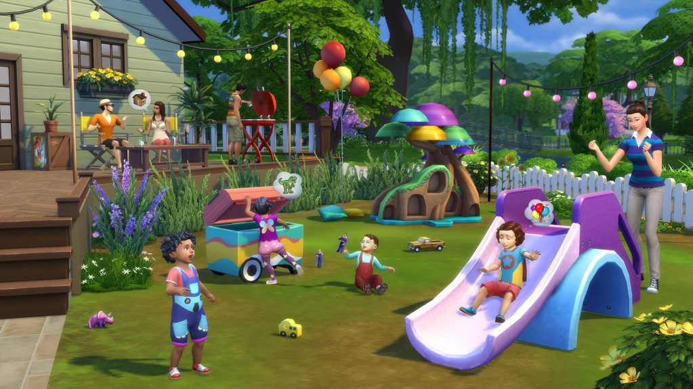

The Sims 4
The Sims 4(PT-BR) ou Os Sims 4(PT-PT) é um jogo eletrônico de simulação de vida, anunciado pelo The Sims Studio em 6 de maio de 2013. Foi lançado em 2 de setembro de 2014 em mídia digital, 4 de setembro de 2014 em mídia física e 17 de fevereiro de 2015 para Mac.
Oferece recursos online, mas foi desenvolvido principalmente para o modo offline. Assim, uma conexão permanente com a Internet não é necessária.
Descrição Oficial
The Sims 4 é o tão esperado jogo de simulação que permite jogar com a vida de um jeito inovador. Crie Sims novos com inteligência e emoções, cujas ações são informadas e afetadas pelas suas interações e estados emocionais. Use ferramentas de criação inéditas, intuitivas e divertidas. Esculpa seu Sim no Criar Um Sim e construa casas exclusivas com o Modo Construção tátil baseado em cômodos. Controle a mente, corpo e coração dos seus Sims com uma jogabilidade dinâmica repleta de emoções e dê vida às suas histórias.
Anúncio Oficial
A Maxis e a Electronic Arts anunciaram hoje (6 de maio de 2013) que The Sims™ 4 está atualmente em desenvolvimento no The Sims Studio para lançamento no PC em 2014. The Sims 4 celebra o coração e a alma dos próprios Sims, dando aos jogadores uma conexão mais profunda com os mais expressivos, surpreendentes e encantadores Sims sempre nesta experiência offline single-player. The Sims 4 encoraja os jogadores para personalizar seu mundo com ferramentas novas e intuitivas, oferecendo-lhes a possibilidade de compartilhar facilmente sua criatividade com amigos e fãs.
A franquia The Sims é alimentada pela paixão e criatividade de seus milhões de fãs ao redor do mundo. Sua devoção contínua para a franquia inflama o fogo da criatividade da equipe no The Sims Studio, levando-os a melhorar continuamente e inovar em um jogo de simulação de maior sucesso do mundo, que já vendeu mais de 150 milhões de cópias em todo o mundo.
Como um agradecimento pelo apoio dos mais de 30 milhões de fãs que compartilham e discutem histórias sobre The Sims através das redes sociais globais, nós realizamos uma coletiva VIP especial esta manhã, onde vários dos melhores fãs do mundo, estavam entre os primeiros a ouvir a notícia sobre The Sims 4. Eles tem que falar com a equipe de criação para o The Sims 4 e terão acesso especial para a equipe de desenvolvimento.
Caracteristicas
Sims Novos. Crie e controle Sims mais inteligentes, mais realistas e mais ricos emocionalmente.
Inteligência. Os seus Sims vão mover-se e agir mais naturalmente do que nunca, podendo até fazer mais do que uma tarefa ou expressar as suas emoções pela maneira como andam. Escolha as personalidades dos seus Sims, selecione aspirações e explore os objetivos de vida deles por meio dos pensamentos, habilidades sociais, carreiras e lembranças.